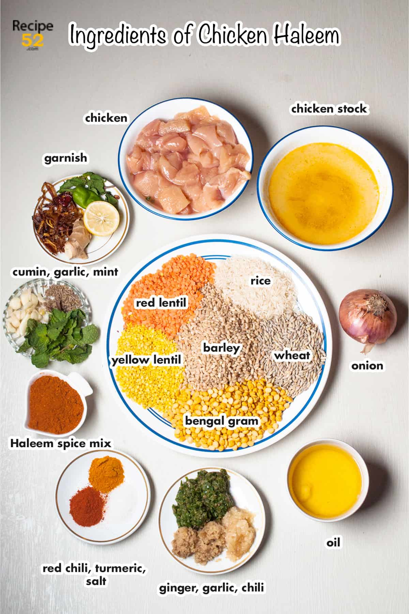
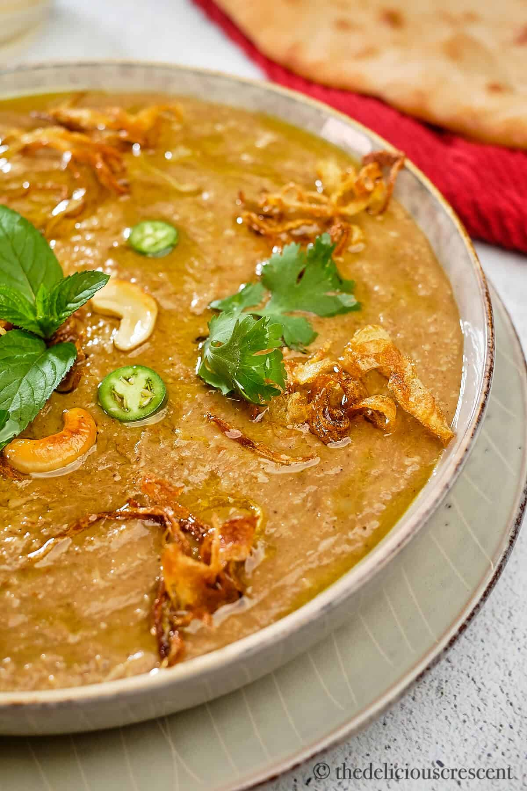
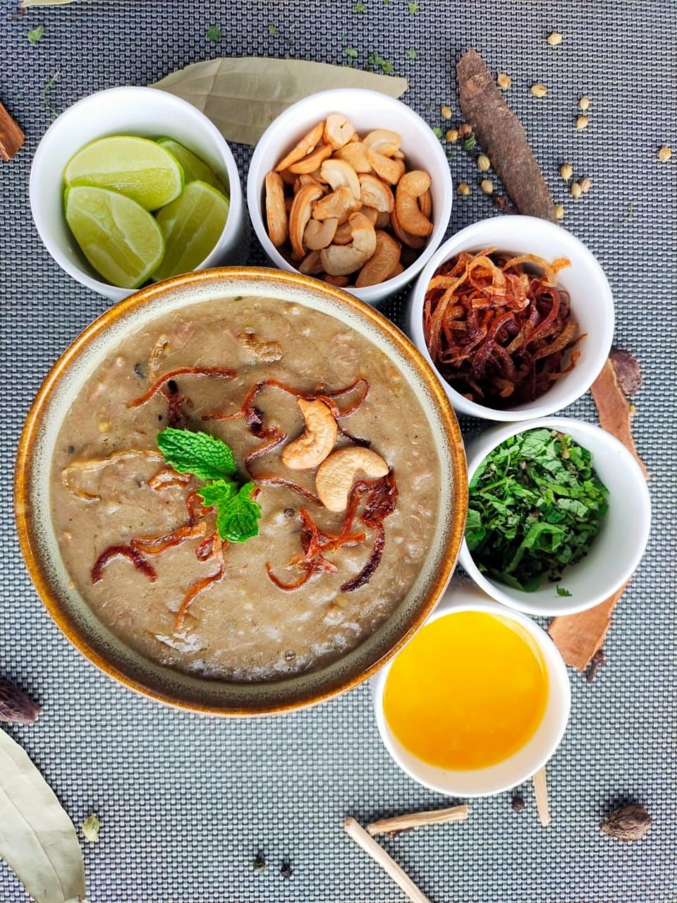

Ingredients:
- 500g boneless chicken or mutton
- 1 cup wheat
- 1/2 cup barley
- 1/2 cup lentils (moong dal)
- 1 onion, thinly sliced
- 2 tablespoons ginger-garlic paste
- 2 teaspoons garam masala
- 1/4 cup fried onions
Instructions:
- Rinse and soak wheat grains and barley overnight.
- Cook meat with onions, garlic, ginger, and spices until tender.
- Add soaked lentils and grains to the pot with the cooked meat.
- Cook everything together until grains and lentils are soft and mushy.
- Blend the mixture until smooth, adjust seasoning, and add water if needed.
- Prepare a tempering of fried onions and pour over the haleem.
- Garnish with coriander leaves and sliced ginger, then serve hot with naan or rice.
Back to Home